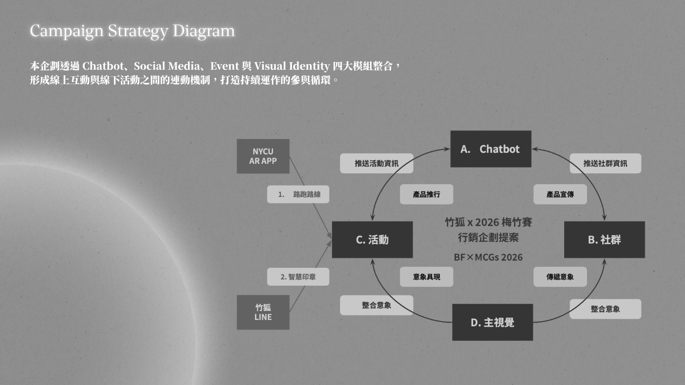
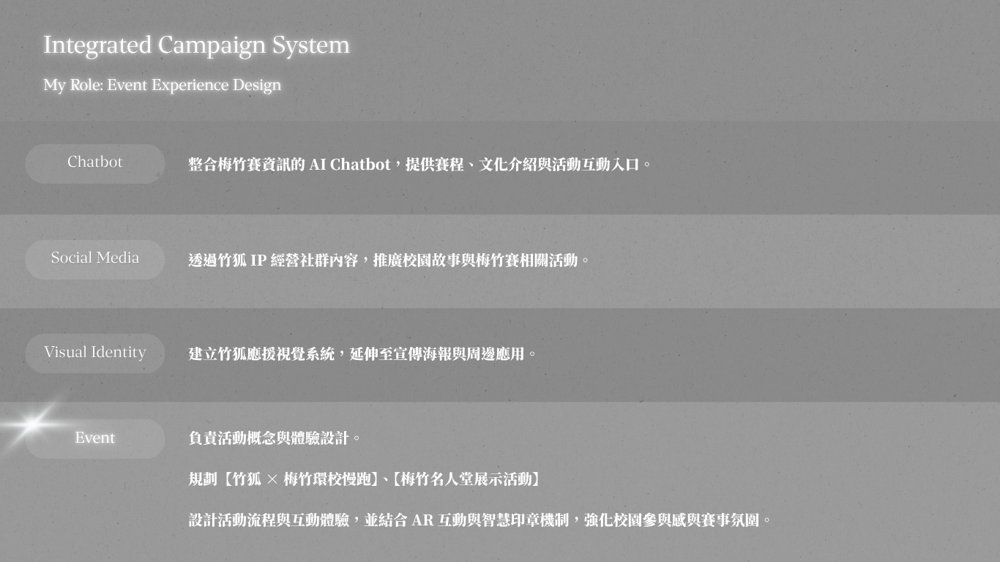

Flag Ceremony
由校長於交清小徑授旗， 將梅竹戰旗交給領跑隊伍， 建立活動開始的儀式感。

Project Overview
本專案以 2026 梅竹賽為情境，思考如何將竹狐吉祥物 延伸為串連校園文化、賽事內容與學生參與的角色 IP， 並透過實體活動與互動機制，建立更完整的賽前、 賽中與賽後體驗。
企劃提出竹狐 × 梅竹環校慢跑與梅竹名人堂兩項活動概念， 將戰旗傳遞、校園節點、AR 關卡、應援互動與賽後回顧 整合為一條從認知、參與到分享的體驗路徑。
我參與整體企劃討論、活動概念發想與內容架構整理， 並協助將環校慢跑、AR 互動與梅竹名人堂 整合為具連續性的校園體驗提案。
Campaign Framework
整體企劃以竹狐作為活動引導者與賽事記錄者， 透過環校慢跑建立賽前動員， 再以梅竹名人堂承接賽前應援、賽中互動與賽後回顧。

Event Concept 01
環校慢跑安排於梅竹賽賽前一週， 透過校園指標地點與集體移動，引起學生對賽事的關注， 並將校園精神、歸屬感與應援行動轉化為可實際參與的體驗。
活動路線預計串連交清小徑、體育館、棒壘球場、 網球場、竹湖與大禮堂，並結合授旗、選手關主、 AR 問答與誓師活動。

Experience Journey
由校長於交清小徑授旗， 將梅竹戰旗交給領跑隊伍， 建立活動開始的儀式感。
參與者沿校園代表性場域移動， 透過共同路線連結校園空間與賽事記憶。
由梅竹選手擔任關主， 參與者回答賽事問題並累積智慧印章。
路線最終抵達大禮堂， 透過誓師活動將個人參與轉化為集體應援。
Interactive Layer
AR 機制讓參與者在慢跑途中回答梅竹賽相關問題， 並由關主透過智慧印章記錄完成進度。 集點不只作為兌換方式，也讓賽事文化融入移動過程。
Event Concept 02
梅竹名人堂將竹狐設定為官方記錄者與首席應援團長， 透過實體展區記錄選手、賽事片段與觀眾應援， 建立一個橫跨賽前、賽中與賽後的共享空間。
場域分為梅竹英雄榜與梅竹榮耀榜兩個階段： 前者帶動預測、應援與社群分享， 後者則保存賽事記憶，並透過選手分享延長賽後討論。

Experience Phases
01
賽前與賽中以英雄榜建立觀眾與選手之間的連結， 讓參與者留下應援訊息、預測賽事， 並在竹狐主題場景中拍照分享。
02
賽後將應援牆轉化為榮耀牆， 記錄選手表現、精彩片段與準備歷程， 並透過分享活動延續賽事記憶。
Activity Details
除了核心活動概念，企劃也進一步整理現場配置、 互動方式與執行參考，作為後續場勘、 技術確認與活動製作的討論基礎。

Integrated Experience
環校慢跑將梅竹精神轉化為可共同參與的校園行動， 梅竹名人堂則承接賽前應援、賽中互動與賽後回顧。 兩項活動共同形成從認知、參與到分享的體驗路徑。
Proposal Scope
本專案主要完成活動概念、內容架構與接觸點規劃， 尚未進入正式執行階段。路跑路線、人流安全、 AR 技術、場地使用、選手協作與活動物料， 皆需在後續階段進一步確認。
因此，本頁呈現的是企劃方向與預期體驗， 不將活動目標描述為已實際達成的成果。
Reflection
這個專案讓我理解，校園吉祥物不只是一個視覺角色， 也可以成為活動引導、參與行動與文化記憶之間的連結者。
當角色設定、互動機制與實體活動共享相同的核心精神時， 吉祥物才有機會從單次宣傳素材， 逐步發展為能被持續參與與記憶的校園 IP。